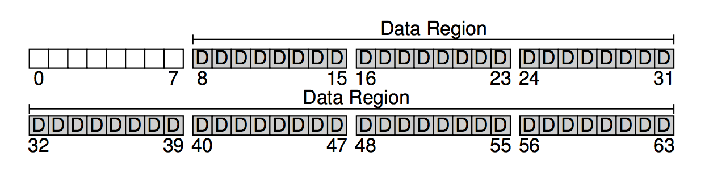
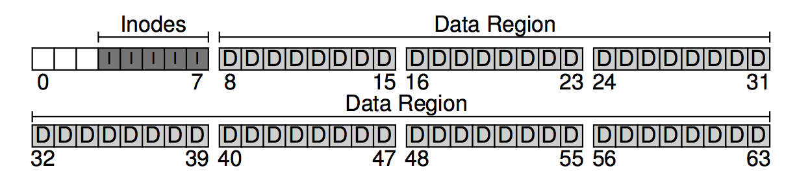
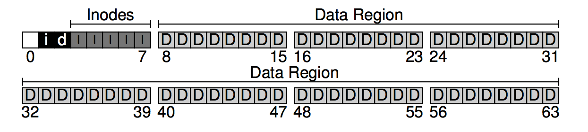
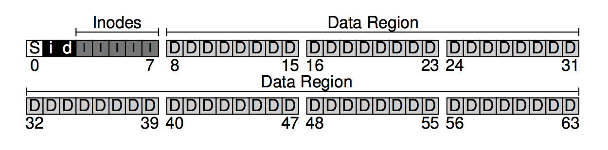
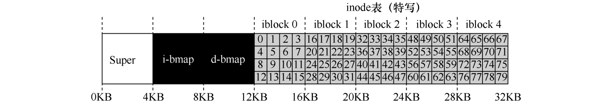

整体组织
首先，将磁盘划分为一个个块，块大小为 4KB，这也是很多文件系统普遍使用的块大小。将上述划分的块编号为 0 至 N-1，则该文件系统的大小为 N 个 4KB。
假设我们的磁盘的大小只能划分为 64 块。文件系统嘛，就是用来存储用户数据的，我们将存储用户数据的区域称为data region。另外，为了简便，将 64 块中靠后的 56 块用作data region，如下图所示。

文件系统需要追踪每个文件的信息，如组成文件的数据块（在data region中）、文件大小、所有者和访问权限、访问和修改时间及其它相关信息。文件系统通常用一个叫inode的结构来存储这些信息。为了容纳inode，需要在磁盘中保留一些空间，我们将这部分空间称为inode table，inode table只是简单地保存inode的数组。我们用 64 块中的 5 块来存储inode。

inode都不大，一般是 128 或 256 字节。假设每个inode都是 256 字节，一个 4KB 的块可以保存 16 个inode，则我们的磁盘有 5 * 16 = 80 个inode，inode的数量表示文件系统的最大文件数量。
现在已经有了数据块和inode了，还缺少了一个基本的组件，就是以某些方式追踪数据块或inode是空闲还是已分配，这种allocation structures是任何系统都必不可少的。下面我们使用位图bitmap来追踪，一个用于data region，另一个用于inode table，也就是下图中的d和i。

位图使用了整个 4KB 的块，一个位图可以追踪 4 * 8 * 2^10 = 32 * 2^10 个分配对象。当然，我们现在只有 56 个数据块以及 80 个inode。
现在文件系统中还有一个块仍未使用，我们将这块用作superblock，在下图用S表示。superblock包含了文件系统的信息，比如数据块和inode的数量（分别是 56 和 80），inode table的开始位置（第 3 块），表示文件类型的magic number等等。

在挂载文件系统时，操作系统会首先读取superblock，初始化参数，然后将卷附加到文件系统树。当访问卷内文件时，系统将准确地知道在哪里查找所需的磁盘结构。
文件组织：inode
文件系统最重要的磁盘结构之一是 inode，几乎所有的文件系统都有类似的结构。名称 inode 是 index node（索引节点）的缩写，它是由 UNIX 开发人员 Ken Thompson 给出的历史性名称，因为这些节点最初放在一个数组中，在访问特定 inode 时会用到该数组的索引。
每个 inode 都由一个数字（称为 inumber）隐式引用，我们称之为文件的低级名称(low-level name)。在 VSFS（和其他简单的文件系统）中，给定一个 inumber，应该能够直接计算磁盘上相应节点的位置。例如，要获取 VSFS 的 inode 表：大小为 20KB（5 个 4KB 块），因此由 80 个 inode（假设每个 inode 为 256 字节）组成。进一步假设 inode 区域从 12KB 开始（即超级块从 0KB 开始，inode 位图在 4KB 位置，数据位图在 8KB，因此 inode 表紧随其后）。因此，在 VSFS 中，我们为文件系统分区的开头提供了以下布局（特写视图）：

要读取 inode 号 32，文件系统首先会计算 inode 区域的偏移量（32 X inode 的大小，即 32 X 256 = 8192），将它加上磁盘 inode 表的起始地址（12 KB），从而得到希望的 inode 块的正确字节地址：20 KB。由于磁盘不是按字节寻址的，而是由大量可寻址扇区组成，通常是 512 字节。因此，为了获取包含索引节点 32 的索引节点块，文件系统将向节点（即 40，之所以是 40，是因为 20KB = 2 X 20 X 512 ＝ 40 X 512）发出一个读取请求，取得期望的 inode 块。
在每个 inode 中，实际上是所有关于文件的信息：文件类型（例如，常规文件、目录等）、大小、分配给它的块数、保护信息、一些时间信息，以及在关其数据块驻留在磁盘上的位置信息。我们将所有关于文件的信息称为元数据(metadata)。实际上，文件系统中除了纯粹的用户数据外，其他任何信息通常都称为元数据。
下表是 ext2 文件系统的 inode：
| 大小（字节） | 名称 | inode 字段的用途 |
|---|---|---|
| 2 | mode | 该文件是否可以读/写/执行 |
| 2 | uid | 谁拥有该文件 |
| 4 | size | 该文件有多少字节 |
| 4 | time | 该文件最近的访问时间是什么时候 |
| 4 | ctime | 该文件的创建时间是什么时候 |
| 4 | mtime | 该文件最近的修改时间是什么时候 |
| 4 | dtime | 该 inode 被删除的时间是什么时候 |
| 2 | gid | 该文件属于哪个分组 |
| 2 | links count | 该文件有多少硬链接 |
| 4 | blocks | 为该文件分配了多少块 |
| 4 | flags | ext2 将如何使用该 inode |
| 4 | osd1 | OS 相关的字段 |
| 60 | block | 一组磁盘指针（共 15 个） |
| 4 | generation | 文件版本（用于 NFS） |
| 4 | file acl | 一种新的许可模式，除了 mode 位 |
| 4 | dir acl | 称为访问控制列表 |
| 4 | faddr | 未支持字段 |
| 12 | i osd2 | 另一个 OS 相关字段 |
目录组织
在 VSFS 中（像许多文件系统一样），目录的组织很简单。一个目录基本上只包含一个二元组（条目名称，inode 号）的列表。对于给定目录中的每个文件或目录，目录的数据块中都有一个字符和一个数字。对于每个字符串，可能还有一个长度（假定采用可变大小的名称）。
例如，目录 dir（inode 号是 5）中有 3 个文件（foo、bar 和 foobar），它们的 inode 号分别是 12、13 和 24。dir 在磁盘上的数据可能如下所示：
| inum | reclen | strlen | name |
|---|---|---|---|
| 5 | 4 | 2 | . |
| 2 | 4 | 3 | .. |
| 12 | 4 | 4 | foo |
| 13 | 4 | 4 | bar |
| 24 | 8 | 7 | foobar |
上表每个条目都有一个 inode 号，记录长度（名称的总字节数加上所有的剩余空间），字符串长度（名称的实际长度），最后是条目的名称。
空闲空间管理
文件系统必须记录哪些 inode 和数据块是空闲的，哪些不是。空闲空间管理(free space management)对于所有文件系统都很重要。在 VSFS 中，我们用两个简单的位图来完成这个任务。
访问路径：读取和写入
现在我们已经知道文件和目录如何存储在磁盘上，应该能够明白读取或写入文件的操作过程。理解这个访问路径上发生的事情，是开发人员理解文件系统如何工作的第二个关键。
假设文件系统已经挂载，其它内存（inode 和目录）在磁盘上。
从磁盘读取文件
假设要打开一个文件/foo/bar，文件大小只有 4KB（一块）。
发出一个 open("/foo/bar", O_RDONLY) 调用时，文件系统首先需要找到文件 bar 的 inode，从而获取它的元信息。这时文件系统必须遍历路径名。
所有遍历都从文件系统的根开始，即根目录(root dirctory)/。要找到根目录的 inode，必须先知道它的 i-number，通常 i-number 在父目录中，但根目录没有父目录，因此它的 inode 必须要众所周知的，在挂载文件系统时，文件系统必须知道它是什么。
一旦找到了根目录的 inode，就能通过目录中的指针找到 foo 项，也就意味着 foo 的 i-number 就知道了。
下一步就是递归遍历路径名，直到找到所需的 inode。open() 的最后一步是将 bar 的 inode 读入内存，然后文件系统进行最后的权限检查，在每个进程的打开文件表中，为此进程分配一个文件描述符，并将它返回给用户。
打开后，程序可以发出 read() 系统调用，从文件中读取。第一次读取（除非 lseek() 已被调用，则在偏移量 0 处）将在文件的第一个块中读取，查阅 inode 以查找这个块的位置。它也会用新的最后访问时间更新 inode。读取将进一步更新此文件描述符在内存中的打开文件表，更新文件偏移量，以便下一次读取第二个文件块，依此类推。
在某个时候，文件将被关闭。这里要做的工作要少得多。很明显，文件描述符应该被释放，但现在，这就是 FS 真正要做的。没有磁盘 I/O 发生。
open() 产生的 I/O 量跟路径名的长度成正比。
写入磁盘
写入磁盘首先必须打开文件。其次，应用程序可以发出 write() 调用以用新内容更新文件。最后，关闭该文件。
与读取不同，写入文件也可能会分配(allocate)一个块（除非块被覆盖）。在写入一个新文件时，每次写入操作不仅需要将数据写入磁盘，还必须要决定将哪个块分配给文件，从而相应地更新磁盘的其他结构（如数据位图和 inode）。因此，每次写入文件在逻辑上会导致 5 个 I/O：一个读取数据位图（然后更新票房新分配的块被使用），一个写入位图（将它的新状态存入磁盘），再是再次读取，然后写入 inode（用新块的位置更新），最后一次写入真正的数据块本身。
至于创建文件的工作量则更加大。
缓存和缓冲
如上所述，读取和写入文件的开销可能会很大，导致很多磁盘的慢速 I/O。这显然是一个巨大的性能问题。为此，大多数文件系统都使用系统内存(DRAM)来缓存重要的块。
在有缓存时，第一次打开文件可能会产生很多 I/O，但随后再次打开同一文件，大部分会命中缓存，因此不需要 I/O。
尽管可以通过足够大的缓存完全避免读取 I/O，但写入必须进入磁盘，才能实现持久化。因此，高速缓存不能减少写入。这时，写缓冲(write buffering)就能起到作用了。首先，通过延迟写入，文件系统可以将一些更新编成一批(batch)，放入一组较小的 I/O 中。例如，如果在创建一个文件时，inode 位图被更新，稍后在创建另一个文件时又被更新，则文件系统会在第一次更新后延迟写入，从而节省一次 I/O。其次，通过将一些写入缓冲到内存中，系统可以调度(schedule)后续的 I/O，从而提高性能。最后，一些写入可以通过拖延来完全避免。例如，如果应用程序创建文件并将其删除，则将文件创建延迟写入磁盘，可以完全避免(avoid)写入。这种情况下，懒惰（在将块写入磁盘时）是一种美德。
基于上述原因，大多数现代文件系统将写入在内存中缓冲 5 到 30 秒，这代表了另一种折中：如果系统在更新传递到磁盘之前崩溃，更新就会丢失。但是，将内存写入时间延长，则可以通过批处理、调度甚至避免写入来提升性能。
当然，某些应用程序（如数据库）为了避免由于写入缓冲导致的意外数据丢失，它们就强制写入磁盘，通过 fsync() 使用绕过缓冲的直接 I/O(direct I/O) 接口，或者使用原始磁盘(raw disk)接口并完全避免使用文件系统。